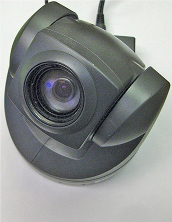
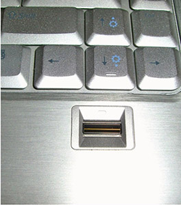
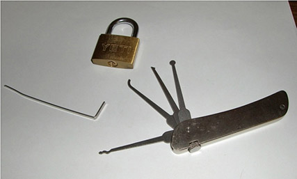
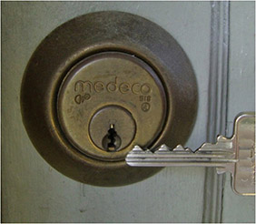
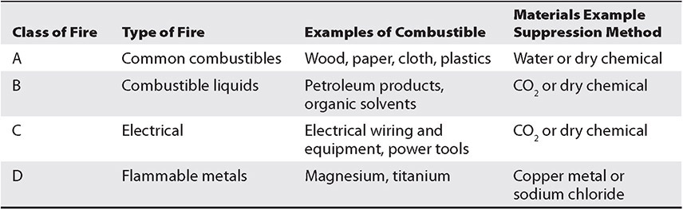
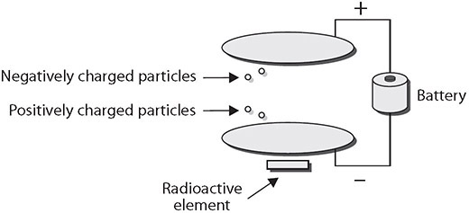

Table of Contents for
CompTIA Security+ All-in-One Exam Guide, Sixth Edition (Exam SY0-601)), 6th Edition
- Cover (01:09 mins)
- Title Page (01:09 mins)
- Copyright Page (03:27 mins)
- Dedication (01:09 mins)
- About the Authors (04:36 mins)
- Contents (19:33 mins)
- Preface (02:18 mins)
- Acknowledgments (01:09 mins)
- Introduction (12:39 mins)
-
Part I Threats, Attacks, and Vulnerabilities (01:09 mins)
- Chapter 1 Social Engineering Techniques (35:39 mins)
- Chapter 2 Type of Attack Indicators (37:57 mins)
- Chapter 3 Application Attack Indicators (33:21 mins)
- Chapter 4 Network Attack Indicators (39:06 mins)
- Chapter 5 Threat Actors, Vectors, and Intelligence Sources (44:51 mins)
- Chapter 6 Vulnerabilities (31:03 mins)
- Chapter 7 Security Assessments (23:00 mins)
- Chapter 8 Penetration Testing (25:18 mins)
-
Part II Architecture and Design (01:09 mins)
- Chapter 9 Enterprise Security Architecture (26:27 mins)
- Chapter 10 Virtualization and Cloud Security (25:18 mins)
- Chapter 11 Secure Application Development, Deployment, and Automation Concepts (27:36 mins)
- Chapter 12 Authentication and Authorization (33:21 mins)
- Chapter 13 Cybersecurity Resilience (39:06 mins)
- Chapter 14 Embedded and Specialized Systems (41:24 mins)
- Chapter 15 Physical Security Controls (49:27 mins)
- Chapter 16 Cryptographic Concepts (42:33 mins)
-
Part III Implementation (01:09 mins)
- Chapter 17 Secure Protocols (20:42 mins)
- Chapter 18 Host and Application Security (46:00 mins)
- Chapter 19 Secure Network Design (67:51 mins)
- Chapter 20 Wireless Security (25:18 mins)
- Chapter 21 Secure Mobile Solutions (43:42 mins)
- Chapter 22 Implementing Cloud Security (24:09 mins)
- Chapter 23 Identity and Account Management Controls (33:21 mins)
- Chapter 24 Implement Authentication and Authorization (37:57 mins)
- Chapter 25 Public Key Infrastructure (55:12 mins)
- Part IV Operations and Incident Response (01:09 mins)
- Part V Governance, Risk, and Compliance (01:09 mins)
- Part VI Appendixes and Glossary (01:09 mins)
- Glossary (65:33 mins)
- Index (67:51 mins)
CHAPTER 15
Physical Security Controls
In this chapter, you will
• Explore the importance of physical security controls
• Learn about important environment controls
Physical security is an important topic for businesses dealing with the security of networks and information systems. Businesses are responsible for managing their risk exposure, which requires securing a combination of assets: employees, product inventory, trade secrets, and strategy information. These and other important assets affect the profitability of a company and its future survival. Companies therefore perform many activities to attempt to provide physical security—locking doors, installing alarm systems, using safes, posting security guards, setting access controls, and more.
Environmental controls play an important role in the protection of the systems used to process information. Most companies today have invested a large amount of time, money, and effort in both network security and information systems security. In this chapter, you will learn about how the strategies for securing the network and for securing information systems are linked, and you’ll learn several methods by which companies can minimize their exposure to physical security events that can diminish their network security.
Certification Objective This chapter covers CompTIA Security+ exam objective 2.7: Explain the importance of physical security controls.
Bollards/Barricades
The primary defense against a majority of physical attacks is the barricades between the assets and a potential attacker—walls, fences, gates, and doors. Barricades provide the foundation upon which all other security initiatives are based, but the security must be designed carefully, as an attacker has to find only a single gap to gain access. Barricades can also be used to control vehicular access to and near a building or structure. The simple post-type barricade that prevents a vehicle from passing but allows people to walk past is called a bollard.
Walls may have been one of the first inventions of humans. Once we learned to use natural obstacles such as mountains to separate us from our enemies, we next learned to build our own mountain for the same purpose. Hadrian’s Wall in England, the Great Wall of China, and the Berlin Wall are all famous examples of such basic physical defenses. The walls of any building serve the same purpose, but on a smaller scale: they provide barriers to physical access to company assets. In the case of information assets, as a general rule, the most valuable assets are contained on company servers. To protect the physical servers, you must look in all directions. Doors and windows should be safeguarded, and a minimum number of each should be used in a server room when they are all that separate the servers from the personnel allowed to access them. It is very important that any transparent windows or doors do not allow shoulder surfing from outside the server room. It is good to see people in the room, just not what they type on their screens. Less obvious entry points should also be considered: Is a drop ceiling used in the server room? Do the interior walls extend to the actual roof, raised floors, or crawlspaces? Access to the server room should be limited to the people who need access, not to all employees of the organization. If you are going to use a wall to protect an asset, make sure no obvious holes appear in that wall.
Another method of preventing surreptitious access is through the use of windows. Many high-security areas have a significant number of windows so that people’s activities within the area can’t be hidden. A closed server room with no windows makes for a quiet place for someone to achieve physical access to a device without worry of being seen. Windows remove this privacy element that many criminals depend on to achieve their entry and illicit activities.
Access Control Vestibules
The implementation of a access control vestibule, also called a mantrap, is one way to combat tailgating. An access control vestibule is composed of two closely spaced doors that require the user to card through one and then the other sequentially. Mantraps make it nearly impossible to trail through a doorway undetected—if an intruder happens to catch the first door before it closes, he will be trapped in by the second door, as the second door remains locked until the first one closes and locks.
Badges
As organizations grow in size, it is not possible for everyone to know everyone else by sight. Hence, some form of physical identification is needed to recognize employees. A badge with a picture on it can enable others to quickly determine if you are an employee or not. Visitors are given their own badge that identifies them as a visitor. Radio-frequency identification (RFID) uses electromagnetic fields to automatically identify and record information. RFID tags are widely used in identification badges, replacing earlier magnetic stripe cards and making them useable with just a swipe near a reader.
Alarms
Alarms serve to alert operators to abnormal conditions. Physical security can involve numerous sensors, intrusion alarms, motion detectors, switches that alert to doors being opened, video and audio surveillance, and more. Each of these systems can gather useful information, but it is only truly useful if it is acted upon. When one of these systems has information that can be of use to operational personnel, an alarm is the easiest method of alerting personnel to the condition. Alarms are not simple; if a company has too many alarm conditions, especially false alarms, then the operators will not react to the conditions as desired. Tuning alarms so that they provide useful, accurate, and actionable information is important if you want them to be effective.
Signage
Signs act as informational devices and can be used in a variety of ways to assist in physical security. Signage can provide information as to areas that are restricted, or it can indicate where specific precautions, such as keeping doors locked, are required. A common use of signs in high-security facilities is to delineate where visitors are allowed versus secured areas where escorts are required. Visual security clues can assist in alerting users to the need for specific security precautions. Visual clues as to the types of protection required can take the form of different-color name badges that signify the level of access, visual lanyards that indicate visitors, colored folders, and so forth.
Cameras
Cameras are an important tool for security. The old adage “a picture is worth a thousand words” consistently rings true, and this is especially true in security. From recording evidence for later use, like taking pictures of equipment, serial number panels, and so on, to collecting evidence at crime scenes, cameras enable the re-creation of scenes at a later date. Cameras have been around for over 100 years, but with the invention of digital photography, followed by the addition of cameras to cell phones, today there are literally billions of cameras worldwide taking tens of billions of photos. One of the interesting uses of this technology is the ability to quickly share photos with others, allowing someone to “see” far beyond normal range of eyesight. In 2020, when riots broke out across the U.S., many protesters documented the police response using cell phone cameras. While they were using their cameras to document the police, they also captured images that law enforcement would later use to catch those responsible for crimes.
Video cameras offer an even greater range of surveillance capability, and closed-circuit TV cameras are covered in a later section.
Motion Recognition
Motion recognition is an important technology to limit the search time and recording space associated with video images. Infrared (IR) radiation is not visible to the human eye, but it can be used just like a light source to detect a range of things. Motion from living creatures can be seen because of the heat signatures of their bodies. Infrared detection is a technical means of looking for things that otherwise may not be noticed. At night, when it is dark, someone can hide in the shadows, but infrared light can point them out to IR-sensing cameras. Infrared detectors can sense differences in temperature, which can be from a person entering a room, even if that person is not visible due to darkness. IR alarms are used extensively to monitor movement of people in areas where there should be none.
Object Detection
Modern surveillance video systems come with some impressive software. Even cameras sold to homeowners can scan video for movement and detect people, cars, and other designated objects such as packages left on a porch. The use of video software for object detection does not replace the human eye, but it significantly enhances a guard’s ability to effectively use large banks of cameras to cover a facility. The citywide video surveillance system in London was the primary source of evidence that identified the terrorists who set off a series of bombs across the city in 2005.
Closed-Circuit Television (CCTV)
Video surveillance is typically done through closed-circuit television (CCTV). The use of CCTV cameras for surveillance purposes dates back to at least 1961, when cameras were installed in the London Transport train station. The development of smaller camera components and lower costs has caused a boon in the CCTV industry since then.
CCTV cameras are used to monitor a workplace for security purposes. These systems are commonplace in banks and jewelry stores—places with high-value merchandise that is attractive to thieves. As the expense of these systems dropped, they became practical for many more industry segments. Traditional cameras are analog based and require a video multiplexer to combine all the signals and make multiple views appear on a monitor. Digital, IP-based cameras have changed that, as most of them are stand-alone units that are viewable through a web browser, such as the camera shown in Figure 15-1.

Figure 15-1 IP-based cameras leverage existing IP networks instead of needing a proprietary CCTV cable.
These IP-based systems add useful functionality, such as the ability to check on the building from the Internet. This network functionality, however, makes the cameras subject to normal IP-based network attacks. A DoS attack launched at the CCTV system just as a break-in is occurring is the last thing that anyone would want (other than the criminals). For this reason, IP-based CCTV cameras should be placed on their own separate network that can be accessed only by security personnel. The same physical separation applies to any IP-based camera infrastructure. Older time-lapse tape recorders are slowly being replaced with digital video recorders. While the advance in technology is significant, be careful if and when these devices become IP-enabled, since they will become a security issue, just like everything else that touches the network.
If you depend on a CCTV system to protect your organization’s assets, carefully consider camera placement and the type of cameras used. Different iris types, focal lengths, and color or infrared capabilities are all options that make one camera superior to another in a specific location.
Industrial Camouflage
Camouflage is the specific act of rendering an item not readily observable. Considered by many to be a military thing, camouflage began in nature, where insects and animals have patterns making them seem to be different than they really are. This same principle is used all the time to make things hide in plain sight. Cell phone towers built to look like trees make them less conspicuous—and generally improve the visual surroundings. In response to physical acts against electrical substations, many utilities have put walls around the substations, making the internal equipment no longer visible and less of a target.
Personnel
Physical security should be a part of a firm’s overall security program. Physical security measures are those taken to ensure the separation of items to be protected from all forms of physical risk. Personnel are an important part of this equation—from guards to lobby workers who act as gatekeepers for visitors and packages, people are part of the physical security system.
Guards
Security guards provide an excellent security measure, because guards are a visible presence with direct responsibility for security. Other employees expect security guards to behave a certain way with regard to securing the facility. Guards typically monitor entrances and exits and can maintain access logs of who has entered and departed the building. In many organizations, everyone who passes through security as a visitor must sign a log, which can be useful in tracing who was at what location and why.
Security personnel are helpful in physically securing the machines on which information assets reside, but to get the most benefit from their presence, they must be trained to take a holistic approach to security. The value of data typically can be many times that of the machines on which the data is stored. Security guards typically are not computer security experts, so they need to be educated about the value of the data and be trained in network security as well as physical security involving users. They are the company’s eyes and ears for suspicious activity, so the network security department needs to train them to notice suspicious network activity as well. Multiple extensions ringing in sequence during the night, computers rebooting all at once, and strangers parked in the parking lot with laptop computers or other mobile computing devices are all indicators of a network attack that might be missed without proper training.
Robot Sentries
Guard duty is by and large boring work, and although guards aren’t highly paid over time, having a number of guards can be expensive. Robot technology has progressed to the point where robots can now perform many simple tasks, and guard duty can be one of these tasks. Robot sentries can patrol empty buildings and using sensors can detect the presence of unauthorized people. Robot sentries can then report the issue to a manned station that can alert the proper authorities for a response.
Reception
Reception areas are used as buffer zones between different areas of a facility, segmenting the building into separate regions. Having a visitor check-in desk allows control over visitors as well as enables functions like logging visitors, managing deliveries, and providing escorts for visitors. In lower security environments, this reception area may simply be someone at a desk, with no physical barrier. In more secure facilities, the receptionist is not only responsible for keeping logs, issuing access badges, and notifying escorts, but also controls the door everyone must go through. In very highly controlled environments, the actual door control is done remotely from the other side of the door so that people can’t force their way past the receptionist.
Two-Person Integrity/Control
When tasks are critical, or failures could involve significant risk, the organizational principle of separation of duties applies. This topic is fully covered in Chapter 33, “Organizational Policies.” When there are physical tasks, such as opening the door mentioned in the previous section, having two people required to perform the task provides a means of checks and balances. Two-person integrity/control is this principle in action: it is when two different people have to perform respective tasks that are both necessary for the action to occur. Person 1 can initiate a process, check IDs, enter data in a log, and issue a visitor badge, while person 2 can control the door access. This way, a failure by either person does not expose the process.
Locks
Locks are a common security measure that are used with near ubiquity. Everyone is familiar with using a lock to secure something. Many different lock types are used in and around the computer security arena. There are types for laptops and other mobile devices, for desktops, and even servers. Just as locks can keep your car or bike from being stolen, they can secure computers as well. Laptops are popular targets for thieves and should be locked inside a desk when not in use, or secured with special computer lockdown cables. Laptop thefts from cars can occur in seconds, and thieves have been caught taking laptops from security screening areas at airports while the owners are distracted with the screening process. If an organization uses desktop towers, it should use computer desks that provide a space in which to lock the computer. In some cases, valuable media is stored in a safe designed for that purpose. All of these measures can improve the physical security of the computers themselves, but most of them can be defeated by attackers if users are not knowledgeable about the security program and do not follow it.
Biometrics
Biometrics is the measurement of biological attributes or processes with the goal of identification of a party possessing those measurements. The most well-known biometric factor is the fingerprint. Fingerprint readers have been available for several years in laptops and other mobile devices, as shown in Figure 15-2, and as stand-alone USB devices.

Figure 15-2 Newer laptop computers often include a fingerprint reader.
Other biometric measurements that can be used for physical security purposes include the retina or iris of the eye, the geometry of the hand, and the geometry of the face. When any of these are used for authentication, there is a two-part process: enrollment and then authentication. During enrollment, a computer takes the image of the biological factor and reduces it to a numeric value. When the user attempts to authenticate, his or her feature is scanned by the reader, and the computer compares the numeric value being read to the one stored in the database. If they match, access is allowed. Since these physical factors are unique, theoretically only the actual authorized person would be allowed access.
Biometrics are frequently used in physical security and are becoming nearly ubiquitous for controlling access to mobile devices, such as phones and tablets. For many physical security situations, the true question for access is, are you the correct person who should have access? Using biometrics to confirm the identity of the person being presented for access as the same person who went through the identification phase at enrollment is a good way to answer this question. You can’t loan your fingerprints, iris, or retina for a scan, or your hand for its geometry. Biometrics bind the identification token to the person.
Biometrics are not foolproof. Some biometric measures can be duplicated to fool a sensor, and in many cases, the actual biometric is converted to a number that can also be intercepted and used in a software attack. Safeguards exist for most biometric-bypass mechanisms, making them a usable security technology.
Electronic
Electronic locks are devices that impede a specific function unless a code is entered. This code is compared to a stored secret, and if the correct code is entered, the lock engages the mechanical stop and allows the mechanism to open. Electronic locks have an advantage in that they are not as susceptible to mechanical manipulation and bypass, yet they are still susceptible, in many cases via the mechanism that updates the secret “combination.”
Physical
Physical locks have been used for hundreds of years; their design has not changed much: a metal “token” is used to align pins in a mechanical device. Physical locks have survived for years because they are low cost. Because all mechanical devices have tolerances, it is possible to sneak through these tolerances by “picking” the lock. Most locks can be easily picked with simple tools, some of which are shown in Figure 15-3.

Figure 15-3 Lock-picking tools
Humans are always trying to build a better mousetrap, and that applies to locks as well. High-security locks, such as the one shown in Figure 15-4, have been designed to defeat attacks; these locks are more sophisticated than a standard home deadbolt system. Typically found in commercial applications that require high security, these locks are made to resist picking and drilling, as well as other common attacks such as simply pounding the lock through the door. Another common feature of high-security locks is key control, which refers to the restrictions placed on making a copy of the key. For most residential locks, a trip to the hardware store will allow you to make a copy of the key. Key control locks use patented keyways that can only be copied by a locksmith, who will keep records on authorized users of a particular key.

Figure 15-4 A high-security lock and its key
High-end lock security is more important now that attacks such as “bump keys” are well known and widely available. A bump key is a key cut with all notches to the maximum depth, also known as “all nines.” This key uses a technique that has be around a long time but has recently gained a lot of popularity. The key is inserted into the lock and then sharply struck, bouncing the lock pins up above the shear line and allowing the lock to open. High-security locks attempt to prevent this type of attack through various mechanical means such as nontraditional pin layout, sidebars, and even magnetic keys.
Combination locks, which work via a rotating dial, are common on high-end safes and can raise the security level substantially. In many cases, the only way to bypass one of these locks is to physically bypass the lock itself through drilling or other methods. Additional levels of safeguard exist, such as shatter plates, which when broken engage pins that prevent the door from opening.
Cable Locks
Portable equipment has a principal feature of being portable. This can also be a problem, as portable equipment—laptops, projectors, and the like—can be easily removed or stolen. Cable locks provide a simple means of securing portable equipment to furniture or another fixture in the room where the equipment resides. Cable locks can be used by road warriors to secure laptops from casual theft. They also can be used in open areas such as conference centers or rooms where portable equipment is exposed to a wide range of visitors.
USB Data Blocker
USB connectors on computers offer a pathway for data to enter into the system. Anyone who has physical access to a machine can plug in a USB device and execute code from the device. There are a variety of ways to block USB ports or render them inoperable, but in some cases, the USB port serves a secondary function as a power source for external devices. The USB connection has four conductors: two for power and two for data. If you block the data conductors, you can still charge your device from a USB source without giving that device any access to the data. When charging your phone in locations such as airports, or other unknown power sources, the use of a USB data blocker protects the phone but allows it to charge.
Lighting
Proper lighting is essential for physical security. Unlit or dimly lit areas allow intruders to lurk and conduct unauthorized activities without a significant risk of observation by guards or other personnel. External building lighting is important to ensure that unauthorized activities cannot occur without being observed and responded to. Internal lighting is equally important because it enables more people to observe activities and see conditions that are not correct. As described earlier in the “Bollards/Barricades” section, windows can play an important role in assisting the observation of the premises. Having sensitive areas well lit and open to observation through windows prevents activities that would otherwise take place in secret. Unauthorized parties in server rooms are more likely to be detected if the servers are centrally located, surrounded in windows, and well lit.
Fencing
Fencing serves as a physical barrier around property. It can serve to keep people out or in, preventing the free movement across unauthorized areas. Fencing can be an important part of a physical security plan. Properly employed, it can help secure areas from unauthorized visitors. Outside of the building’s walls, many organizations prefer to have a perimeter fence as a physical first layer of defense. Chain-link-type fencing is most commonly used, and it can be enhanced with barbed wire along the top. Anti-scale fencing, which looks like very tall vertical poles placed close together to form a fence, is used for high-security implementations that require additional scale and tamper resistance.
Inside a building, fencing can be used to provide a means of restricting entry into areas where separate physical security policies apply. Material storage, servers, networking gear, and other sensitive items can be separated from unauthorized access with simple chain link fences. These areas are typically called a cage, and entry/exit to the caged areas is via a gate. The gate allows controlled access and makes it easier to monitor who and what enters and leaves the controlled area. Gates are used for external fencing as well. Gates offer a monitoring point for ingress and egress from a controlled area.
Fire Suppression
According to the Fire Suppression Systems Association (www.fssa.net), 43 percent of businesses that close as a result of a significant fire never reopen. An additional 29 percent fail within three years of the event. The ability to respond to a fire quickly and effectively is thus critical to the long-term success of any organization. Addressing potential fire hazards and vulnerabilities has long been a concern of organizations in their risk analysis process. The goal obviously should be never to have a fire, but if one does occur, it is important to have mechanisms in place to limit the damage the fire can cause. Fire suppression systems are designed to provide protection against the damage from a fire that spreads in a facility. Because they are suppression systems, they don’t prevent the fire from occurring per se, but they do stop it once it begins.
Water-Based Fire Suppression Systems
Water-based fire suppression systems have long been, and still are today, the primary tool to address and control structural fires. Considering the amount of electrical equipment found in today’s office environment and the fact that, for obvious reasons, this equipment does not react well to large applications of water, it is important to know what to do with equipment if it does become subjected to a water-based sprinkler system. The 2017 NFPA 75: Standard for the Protection of Information Technology Equipment outlines measures that can be taken to minimize the damage to electronic equipment exposed to water.
Clean-Agent Fire Suppression Systems
Carbon dioxide (CO2) has been used as a fire suppression agent for a long time. The Bell Telephone Company used portable CO2 extinguishers in the early part of the 20th century. Carbon dioxide extinguishers attack all three necessary elements for a fire to occur. CO2 displaces oxygen so that the amount of oxygen remaining is insufficient to sustain the fire. It also provides some cooling in the fire zone and reduces the concentration of “gasified” fuel.
Argon extinguishes fire by lowering the oxygen concentration below the 15 percent level required for combustible items to burn. Argon systems are designed to reduce the oxygen content to about 12.5 percent, which is below the 15 percent needed for the fire but is still above the 10 percent required by the EPA for human safety.
Inergen, a product of Ansul Corporation, is composed of three gases: 52 percent nitrogen, 40 percent argon, and 8 percent carbon dioxide. In a manner similar to pure argon systems, Inergen systems reduce the level of oxygen to about 12.5 percent, which is sufficient for human safety but not sufficient to sustain a fire.
Handheld Fire Extinguishers
Although computer security professionals typically do not have much influence over the type of fire suppression system that their office includes, they do need to be aware of what type has been installed, what they should do in case of an emergency, and what they need to do to recover after the release of the system. One area that they can influence, however, is the type of handheld fire extinguisher that is located in their area (see Table 15-1).

Table 15-1 Classes of Fires and Types of Suppression Methods
Automatic fire suppression systems designed to discharge when a fire is detected are not the only systems you should be aware of. If a fire can be caught and contained before the automatic systems discharge, it can mean significant savings to the organization in terms of both time and equipment costs (including the recharging of the automatic system). Handheld extinguishers are common in offices, but the correct use of them must be understood; otherwise, disaster can occur.
Fire Detection Devices
An essential complement to fire suppression systems and devices are fire detection devices (fire detectors). Detectors may be able to detect a fire in its very early stages, before a fire suppression system is activated, and sound a warning that potentially enables employees to address the fire before it becomes serious enough for the fire suppression equipment to kick in.
There are several different types of fire detectors. One type, of which there are two varieties, is activated by smoke. The two varieties of smoke detector are ionization and photoelectric. A photoelectric detector is good for potentially providing advance warning of a smoldering fire. This type of device monitors an internal beam of light. If something degrades the light (for example, by obstructing it), the detector assumes it is something like smoke and the alarm sounds. An ionization style of detector uses an ionization chamber and a small radioactive source to detect fast-burning fires. Shown in Figure 15-5, the chamber consists of two plates: one with a positive charge and one with a negative charge. Oxygen and nitrogen particles in the air become “ionized” (an ion is freed from the molecule). The freed ion, which has a negative charge, is attracted to the positive plate, and the remaining part of the molecule, now with a positive charge, is attracted to the negative plate. This movement of particles creates a very small electric current that the device measures. Smoke inhibits this process, and the detector will detect the resulting drop in current and sound an alarm.

Figure 15-5 An ionization chamber for an ionization type of smoke detector
Both of these devices are often referred to generically as smoke detectors, and combinations of both varieties are possible. For more information on smoke detectors, see http://home.howstuffworks.com/home-improvement/household-safety/fire/smoke2.htm. As both of these devices are triggered by the interruption of a signal, without regard to why, they can give false alarms. They are unable to distinguish the difference between the smoke from a kitchen fire and burned toast.
Another type of fire detector is activated by heat. These devices also come in two varieties. Fixed-temperature or fixed-point devices activate if the temperature in the area ever exceeds some predefined level. Rate-of-rise or rate-of-increase temperature devices activate when there is a sudden increase in local temperature that may indicate the beginning stages of a fire. Rate-of-rise sensors can provide an earlier warning but are also responsible for more false warnings.
A third type of detector is flame activated. This type of device relies on the flames from the fire to provide a change in the infrared energy that can be detected. Flame-activated devices are generally more expensive than the other two types but can frequently detect a fire sooner.
Sensors
One of the first items in the security equation is detection. Detection of a specific signal can then be compared to a reference as to if it is allowed or not. The sensor element provides the detection aspect to the security system, enabling decisions and resultant processes. For instance, a motion detector that is trained to detect oncoming traffic can sense someone going the wrong way in a tunnel or controlled exit space.
Motion Detection
When monitoring an area for unauthorized activity, one potentially useful tool is a motion detector. In areas where there is little or no expected traffic, a motion detector can alert an operator to activity in an area. Motion detectors come in a variety of types, but most are based on infrared (heat) radiation and can detect the changes of a warm body moving. They can be tuned for size, ignoring smaller movement such as small animals in outdoor settings. Although not useful in busy office buildings during normal daily use, motion detectors can be useful during off-hours, when traffic is minimal. Motion detectors can be used to trigger video systems, so they do not record large amounts of “empty” activity. Video monitoring of the loading dock area in the back of the building can be triggered in this fashion, using the motion detector to turn on cameras whenever activity is occurring.
Noise Detection
Noise detection is a sensor method that listens for specific sounds. Ordinary things can produce different sounds, and each of these can have a specific spectral signature that can be used to hear some items while ignoring others. Glass breakage has a specific sound, and sensors can be tuned to “hear” glass breakage and provide an alert when it occurs. The use of sensors that target events such as this and provide the information to a central alarm panel can greatly increase the effectiveness of security personnel in monitoring a larger facility.
Proximity Reader
Proximity readers are sensors that provide a signal at a specified distance. The most common application of these are card readers connected to doors: you “swipe” your card by placing it near the reader, and if the codes are correct, you are granted access. However, these devices have much greater utility. A series of proximity readers scattered throughout a facility can act as a reporting sensor, monitoring guards as they traverse their appointed rounds. Guards can check in to each point by interacting with the proximity reader, typically by swiping a card near the device, and the device records their presence at that spot at that time. With near field communication (NFC) and advanced Bluetooth via smartphones, the uses of proximity readers beyond just paying for things is growing exponentially. For example, proximity devices in bus stops can allow your smartphone to get an updated bus schedule. The ability to sense and communicate over short distances has almost endless possibilities.
Moisture Detection
Moisture, or water, can have significant detrimental effects on certain items. Moisture detection sensors provide a remote means of monitoring everything from water leaks to humidity problems. Water can cause damage to electronics, artwork, and many other items. Being able to monitor moisture levels provides the security team a means of detecting the potential for damage from items such as leaking sprinklers or water leaks. As in all sensors, the objective is to provide better “eyes and ears” for the security personnel, allowing 24/7 coverage of issues, many times in remote areas, for conditions that may require attention.
Cards
Controlling physical access to a small facility can be achieved through door locks and physical keys, but that solution is unwieldy for larger facilities with numerous people coming and going. Many organizations rely on a badging system using either tokens or cards that can be tied to automated ID checks and logging of entry/exit. This can provide much greater detail in tracking who is in a facility and when they have come and gone. Tokens and cards can provide a serialized ID for each user, enabling user-specific logging. Originally designed to augment payroll timecards, these electronic IDs have improved security through the logging of employees’ in and out times. Tokens and cards offer the same function as keys, but the system can be remotely updated to manage access in real time, and users can have their privileges revoked without a company or admin having to recover the token or card.
Temperature
Temperature sensors do exactly what you’d think: they sense temperatures. Part of the physical security equation is preventing damage to the infrastructure in an organization, and servers can be an important part of that infrastructure. Server rooms are highly temperature-controlled areas, with hot and cold sides, as servers tend to generate heat, and that heat needs to be removed. Hot and cold aisles are covered in more detail in a later section in this chapter. Monitoring the current temperature in server rooms requires temperature sensors, properly placed to measure the actual temperature experienced by the servers. An analytical monitoring solution can then alert the appropriate personnel when certain temperature ranges are exceeded. In small facilities, one sensor for the entire room might be sufficient; in larger server farms, there may be a sensor per rack. In any case, the idea is the same: measure the temperature and report on exceptions.
Drones
The use of drones has risen sharply in the past couple of years. From home/hobbyist models that can carry a small camera, to larger industrial rigs that can carry larger cameras for longer periods, these devices have revolutionized remote viewing of items. Drones are used by railroads to inspect tracks and used by electric companies to inspect power lines. Their ability to go almost anywhere and visually inspect things is a great resource. These offer interesting use cases for both offense and defense in cybersecurity, because they can be used to surveil physical facilities remotely, providing eyes on demand in a variety of places you might not want a person to go to and in a timeframe that can’t be met any other way.
Visitor Logs
Physical security visitor logs provide the same utility as computer logs for a security investigation. They act as a record of what was observed at specific points in time. Having roving guards check in at various places across a shift via a log entry provides a record of the actual surveillance. Logs of visitors arriving and departing, equipment received and shipped out, and so forth serve as a record of the physical happenings in a facility.
Remote sensing of badges and equipment utilizing RFID tags can create an automatic log of equipment movement, including information about when, where, what, and who. Advanced capabilities such as these make inventory of movable equipment easier, as its location is tracked and it can be scanned remotely.
Faraday Cages
Electromagnetic interference (EMI) is an electrical disturbance that affects an electrical circuit. EMI is due to either electromagnetic induction or radiation emitted from an external source, either of which can induce currents into the small circuits that make up computer systems and cause logic upsets. EMI can plague any type of electronics, but the density of circuitry in the typical data center can make it a haven for EMI. The amount of sensitivity to an EMI field depends on a number of factors, including the length of the circuit, which can act like an antenna. EMI is grouped into two general types: narrowband and broadband. Narrowband is, by its nature, electromagnetic energy with a small frequency band and, therefore, typically sourced from a device that is purposefully transmitting in the specified band, such as a phone. Broadband covers a wider array of frequencies and is typically caused by some type of general electrical power use such as power lines or electric motors.
An example of shielding that can be employed is a Faraday cage or Faraday shield, which is an enclosure of conductive material that is grounded. This can be room-sized or built into a building’s construction; the critical element is that there is no significant gap in the enclosure material. These measures can help shield EMI, especially in high- radio-frequency environments. Faraday cages can be item specific in size, so smaller systems that can encase just a single smartphone are available.
Air Gap
Air gap is a term used to describe the physical and logical separation of a network from all other networks. This separation is designed to prevent unauthorized data transfers to and from the network. The flaw in this logic is that users will move data by other means, such as a USB drive, to get their work done. Frequently called “sneaker net,” this unauthorized bypassing of the air gap, although ostensibly for the purpose of mission accomplishment, increases system risk because it also bypasses checks, logging, and other processes important in development and deployment.
Screened Subnet
The concept of a screened subnet (previously known as a demilitarized zone [DMZ]) comes from military parlance where it represents an area that is not “owned” by either side. This concept is used in networking to indicate a zone where access controls are not as strict as the inside, or as open as the outside; it’s a place of joint cooperation and controlled risk. This same concept works in physical structures, where the lobby is like the outside world and anyone can enter, then there are common hallways where employees mingle, and finally there are special offices and server rooms where access is tightly controlled. The common work areas are akin to the DMZ—an area of controlled risk.
Protected Cable Distribution
Cable runs between systems need to be protected from physical damage to the cables and subsequent communication failures. This is accomplished by protected distribution/protected cabling during the cable installation. This may be something as simple as metal tubes or as complex a concrete pipes to run buried cables. The objective is to prevent any physical damage to the physical layer portion of the system. Protected distribution/protected cabling provides physical safeguards to the cabling between systems, from all physical hazards, including interception and tapping. Shielding cables, such as shielded twisted pair cables, are designed to prevent electromagnetic interference from affecting the signals on the wires in the cable. The protection of entire systems is covered in the earlier section “Faraday Cages.”
Secure Areas
Secure areas are those areas where specific preventative measures are taken to control access both to and from. Like many other physical security constructs, there is a wide range of levels for secure areas. From those created by a simple locked door, to those with special procedures and guards, secure areas can be tailored to the security needs of an enterprise. The overall idea behind a secure area is to limit information and people flow in and out of the area, and when it is permitted it is under the proper level of control. Transport Security Administration (TSA) creates a secure area when you go to an airport by allowing only certain materials and people to pass the checkpoint.
Air Gap
As previously mentioned, the term air gap is used to refer to a system where there is no direct connection to outside systems. An air-gapped network does not have a connection to outside networks. An air gap for a network extends to all physical connections, wired and wireless, and exists to protect a computer or network from outside influences or to keep data from leaving the system. Seemingly simple in principle, it is much harder in practice. If a system is air gapped, how does data get in? What do you do with the results? How do you maintain the system, provide updates, and so on? In practice, when air gaps are used, they have to be monitored for connections that occur around them, ensuring the system remains isolated.
Vault
A vault is a secured area that is designed to provide a specific level of security for what is stored inside. This can be a physical space, with specific safeguards such as walls that cannot be penetrated and doors that can be secured. A vault is a larger item than most safes, typically room sized. For example, a bank vault is used to store large sums of money and other valuables.
Safe
Safes are physical storage devices that are intended to impede unauthorized access to their protected contents. Safes come in a wide variety of shapes, sizes, and costs. The higher the level of protection from the physical environment, the better the level of protection against unauthorized access. Safes are not perfect; in fact, they are rated in terms of how long they can be expected to protect the contents from theft or fire. The better the rating, the more expensive the safe.
There are times when a safe is overkill, providing a higher level of security than is really needed. A simpler solution is secure cabinets and enclosures. Secure cabinets and enclosures provide system owners a place to park an asset until its use. Most secure cabinets/enclosures do not offer all of the levels of protection that one gets with a safe, but they can be useful, especially when the volume of secure storage is large.
Secure enclosures can provide security against some forms of physical access, as in users, yet still provide the proper environmental controls and setting necessary for operation. Safes cannot typically provide these levels of controls.
Hot and Cold Aisles
The trend toward smaller, denser servers means more servers and devices per rack, putting a greater load on the cooling systems. This encourages the use of a hot aisle/cold aisle layout. A data center that is arranged into hot and cold aisles dictates that all the intake fans on all equipment face the cold aisle and that the exhaust fans all face the opposite aisle. The HVAC system is then designed to push cool air underneath the raised floor and up through perforated tiles on the cold aisle. Hot air from the hot aisle is captured by return air ducts for the HVAC system. The use of this layout is designed to control airflow, with the purpose being never to mix the hot and cold air. This requires the use of blocking plates and side plates to close open rack slots. The benefits of this arrangement are that cooling is more efficient and can handle higher density.
Secure Data Destruction
When data is no longer being used, whether it be on old printouts, old systems being discarded, or broken equipment, it is important to destroy the data before losing physical control over the media it is on. Many criminals have learned the value of dumpster diving to discover information that can be used in identity theft, social engineering, and other malicious activities. An organization must concern itself not only with paper trash, but also the information stored on discarded objects such as computers. Several government organizations have been embarrassed when old computers sold to salvagers proved to contain sensitive documents on their hard drives. It is critical for every organization to have a strong disposal and destruction policy and related procedures. This section covers data destruction and media sanitization methods.
Burning
Burning is considered one of the gold-standard methods of data destruction. Once the storage media is rendered into a form that can be destroyed by fire, the chemical processes of fire are irreversible and render the data lost forever. The typical method is to shred the material, even plastic discs and hard drives (including SSDs), and then put the shred in an incinerator and oxidize the material back to base chemical forms. When the material is completely combusted, the information that was on it is gone.
Shredding
Shredding is the physical destruction by tearing an item into many small pieces, which can then be mixed, making reassembly difficult if not impossible. Important papers should be shredded, and important in this case means anything that might be useful to a potential intruder or dumpster diver. It is amazing what intruders can do with what appears to be innocent pieces of information. Shredders come in all sizes, from little desktop models that can handle a few pages at a time, or a single CD/DVD, to industrial versions that can handle even phone books and multiple discs at the same time. The ultimate in industrial shredders can even shred hard disk drives, metal case and all. Many document destruction companies have larger shredders on trucks that they bring to their client’s location and do on-site shredding on a regular schedule.
Pulping
Pulping is a process by which paper fibers are suspended in a liquid and recombined into new paper. If you have data records on paper, and you shred the paper, the pulping process removes the ink by bleaching, and recombines all the shred into new paper, completely destroying the physical layout of the old paper.
Pulverizing
Pulverizing is a physical process of destruction using excessive physical force to break an item into unusable pieces. Pulverizers are used on items like hard disk drives, destroying the platters in a manner that they cannot be reconstructed. A more modern method of pulverizing the data itself is the use of encryption. The data on the drive is encrypted and the key itself is destroyed. This renders the data nonrecoverable based on the encryption strength. This method has unique advantages of scale; a small business can pulverize its own data, whereas it would either need expensive equipment or a third party to pulverize the few disks it needs to destroy each year.
Degaussing
A safer method for destroying files on magnetic storage devices (that is, magnetic tape and hard drives) is to destroy the data magnetically, using a strong magnetic field to degauss the media. Degaussing realigns the magnetic particles, removing the organized structure that represented the data. This effectively destroys all data on the media. Several commercial degaussers are available for this purpose.
Purging
Data purging is a term that is commonly used to describe methods that permanently erase and remove data from a storage space. The key phrase is “remove data,” for unlike deletion, which just destroys the data, purging is designed to open up the storage space for reuse. A circular buffer is a great example of an automatic purge mechanism. It stores a given number of data elements and then the space is reused. If a circular buffer holds 64 MB, for example, once it is full, it overwrites the oldest material as new material is added to the buffer.
Third-Party Solutions
Like many other elements of a security program, there are contractors that sell data destruction as a service. These vendors can take advantage of scale, increasing the capability while sharing the cost of equipment. However, this also introduces a new form of data loss, through the use of the third party that has access to the data before destruction. And, as with all third-party relationships, what counts is what is in the contract. Therefore, a good security review of the particulars in the contract is warranted, not just for legal issues but also technical ones.
Chapter Review
In this chapter, you became acquainted with the principles of physical security controls, including environmental controls. The chapter began by discussing bollards/barricades, signage, cameras, CCTV, and industrial camouflage—all items designed to restrict, guide, or monitor physical movement. From there the chapter moved into security guards, robot sentries, locks, lighting, sensors, drones/UAVs, and protected distribution for cables. These elements further refine restrictions on movement and the ability to access system components. The chapter then examined Faraday cages, air gap, and DMZ. Secure areas including vaults, safes, hot aisles, and cold aisles were also covered.
The chapter closed with an examination of secure data destruction methods, including burning, shredding, degaussing, and third-party solutions.
Questions
To help you prepare further for the CompTIA Security+ exam, and to test your level of preparedness, answer the following questions and then check your answers against the correct answers at the end of the chapter.
1. Why is physical security important to protecting data?
A. Physical access to data will negate the security advantages of the cloud.
B. Information resides on physical assets, linking physical and information security.
C. Social engineering can negate any information security controls.
D. None of the above.
2. Why is proper interior and exterior lighting important?
A. It can detect people who are where they don’t belong.
B. It shows who is in a restricted space.
C. It allows more people and activities to be observed.
D. It is needed for the use of closed-circuit television cameras.
3. Your organization has experienced multiple incidents of graffiti tagging and people loitering in the parking lot despite the chain-link fence surrounding it. What is the best solution to the issue?
A. “No Trespassing” signage
B. More guard stations
C. Additional external lighting
D. Changing the chain-link fencing to anti-scale fencing
4. After a physical security incident, what critical data can security guards commonly provide?
A. Employee ID information
B. Access logs of who has entered and exited the building
C. Alarm codes
D. Blueprints showing unmonitored areas of the building
5. Alarms are effective only if which of the following is true?
A. They alert on abnormal conditions.
B. Every entrance is monitored with a sensor.
C. They are not tied to the information systems.
D. They are tuned to provide accurate and useful alerts.
6. You are implementing a test lab at your organization for early alpha software development. To prevent any of the development code from inadvertently getting put on production computers, what should you implement?
A. Air gap
B. Strict firewalls
C. Protected distribution
D. Patch management
7. What is the security benefit of a Faraday cage?
A. Prevents attack by EMP
B. Prevents accessing a device using a wireless network or cell connection
C. Works better than anti-scale fencing
D. Prevents stack overflows by EMI
8. What is an example of a human-based screened subnet (DMZ)?
A. A visitor’s lobby that is separated from a company office by a receptionist
B. Hallways between the company lobby and offices
C. A server room with a locked door
D. The networking cabinets in the facility
9. What is a primary problem with biometrics?
A. Technically, biometrics are difficult to implement.
B. The human body changes over time.
C. Biometrics are easily faked.
D. Biometrics can’t be loaned or delegated.
10. What should you do to protect your IP-based CCTV system from a DDoS attack?
A. Reconfigure your firewalls.
B. Connect it to an intrusion detection system.
C. Require multifactor authentication to access the CCTV system.
D. Place all CCTV components on a separate network.
Answers
1. B. Information resides on physical assets, linking physical security with the security of information.
2. C. Proper lighting allows more people and activities to be observed.
3. D. A change from chain-link fencing to anti-scale fencing to prevent intruders from climbing the fence is the best solution.
4. B. Guards commonly have logs of who has entered and exited a building.
5. D. Alarms are effective only if they are tuned to provide accurate and useful alerting information.
6. A. A lab environment can be air gapped from the rest of the network to prevent software from being accidentally copied to production machines.
7. B. A Faraday cage can prevent accessing a device via radio frequency waves, either from a wireless network or cell radio.
8. B. The lobby is part of the outside environment, so the hallways are the better choice. Server rooms and networking rooms are the more secured spaces.
9. B. Some biometric features can change over time, or medical conditions can make them less reliable, thus forcing a re-identification phase to resync a user and their biometric.
10. D. The CCTV system should be on a completely separate network, air gapped if possible, with only security personnel having access.